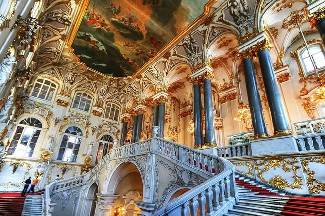
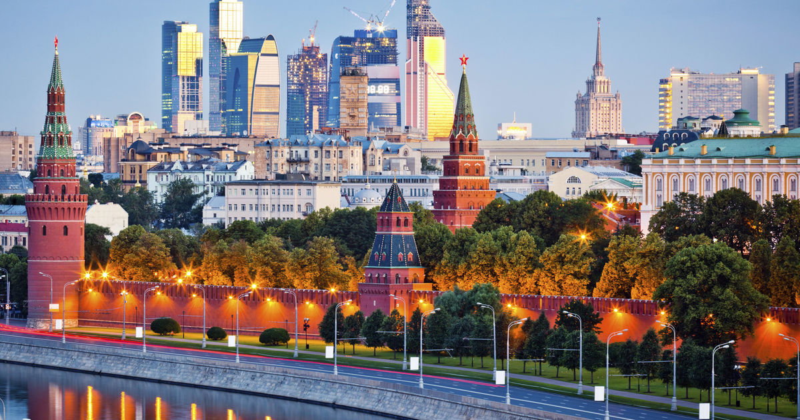
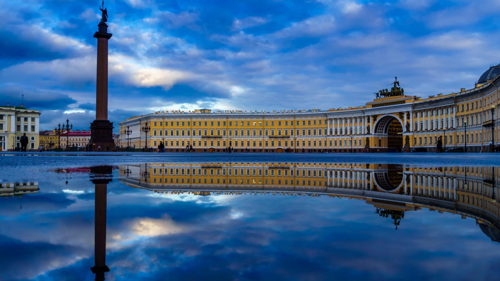

State Hermitage Museum

The Hermitage fully lives up to its sterling reputation. You can be absorbed by its treasures for days and still come out wanting more. The enormous collection (over three million items, only a fraction of which are on display in 360 rooms) almost amounts to a comprehensive history of Western European art. Viewing it demands a little planning, so choose the areas you’d like to concentrate on before you arrive.
Other Destinations
Also check out some other destinations.
Welcome to St. Petersburg!

Compared to other cities in Russia, St Petersburg has a relatively short history of just over 300 years since its establishment in 1703. Since then it has served as the Empire’s capital, housed the royal family, witnessed three revolutions and survived an 870-day siege in World War II. Quite literally every building has played a role in history – here are some of the most significant.
Character Of The City
One of the world's most beautiful cities, St. Petersburg has all the ingredients for an unforgettable travel experience: high art, lavish architecture, wild nightlife, an extraordinary history and rich cultural traditions that have inspired and nurtured some of the modern world's greatest literature, music, and visual art. From the mysterious twilight of the White Nights to world-beating opera and ballet productions on magical winter evenings, St. Petersburg charms and entices in every season. Saint-Petersburg.Com is here to help you navigate every aspect of this fascinating city, with all the information and travel resources necessary to plan your trip to St. Petersburg.
1. City of the Peter the Great
Foundation of St. Petersburg was laid down in 1703 by Peter the Great during the Great Northern War. Peter the Great captured Nyenskans and soon replaced the fortress. On May 27, 1703, he laid down the Peter and Paul Fortress, which became the first brick and stone building of the new city. Initially, it was called Petrograd, some times after it was called Leningrad and then Saint Petersburg. It was the Capital of Russian Empire From 1721 to 1730 and then from 1730 until 1917.
2. City of Cathedrals
The Church of the Savior on Spilled Blood (Russian: Церковь Спаса на Крови, Tserkovʹ Spasa na Krovi) is one of the main sights of St. Petersburg, Russia. This Church was built on the site where Emperor Alexander II was fatally wounded in March 1881.The church was built between 1883 and 1907. The construction was funded by the imperial family. Another one is Saint Isaac’s Cathedral is the largest Russian Orthodox cathedral in the city.
3. City of Royal Museum: Hermitage Museum
The Hermitage Museum is the Museum of Art and Culture. It is one of the largest and oldest Museums in the World. It was founded in 1764 by Catherine the Great and has been open to the public since 1852. This Museum is complex of six historic buildings along Palace Embankment, including the Winter Palace, a former residence of Russian emperors. Apart from them, the Menshikov Palace, Museum of Porcelain, Storage Facility at Staraya Derevnya and the eastern wing of the General Staff Building are also part of the museum.
4. City of Unique Festival: White Night Festival
City of St. Petersburg celebrates unique festival White Night Festival. The Festival begins in May with the “Stars of the White Nights” at Mariinsky Theatre and ends in July. St. Petersburg is the world’s most northern city with a population over 1 million, and its stands at such a high latitude that the sun does not descend below the horizon enough for the sky to grow dark. It’s the time when the day is very long and the sun shines till the midnight and then rises at 3-4 at night, so the nights are not dark.
